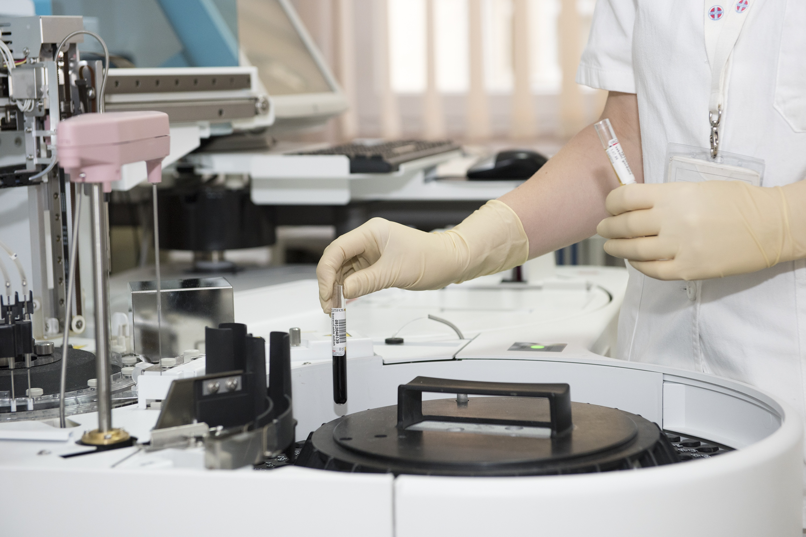

Today is a landmark day for HMS as we complete 39 years of dedicated patient care. Over the years HMS has been he pioneer of healthcare in India, and we are humbled by the love and trust placed in us by over 200 million patients and their families. It has motivated us to put in tireless efforts and remain unwavering in our commitment to bring you the best healthcare in the world.
As we enter our 40th year, I want to re-affirm this commitment - HMS will always bring you the best healthcare in the world, no matter what. This is our mission. Today with over 10,000 beds, 400 clinics, 5,000 pharmacies and our 24/7 digital channel, we bring the best, most comprehensive omnichannel care to you wherever you are and whenever you need it.
We have the best doctors and the most care-focused teams coupled with the most advanced equipment, cutting-edge treatments and technologies, including Proton therapy, robotic surgeries, artificial intelligence and more. These ensure we can get you healthy quickly so you can get back to leading a happy and fulfilling life.
As our country emerges from the pandemic, HMS will focus its efforts on the NCD epidemic, including diabetes, CVD and cancer. Sedentary lifestyles and unhealthy diets have made our youth susceptible to these chronic diseases. Over 50% of premature mortality in India in the 30+ age group can be attributed to NCDs. India will spend around $5 trillion by 2030 to combat NCDs.
To become a developed nation, we must first ensure that we are a healthy nation, and HMS is committed to battling the NCD epidemic to ensure the youth of our nation remains healthy and can accelerate our nation’s development.
But there is much more to be done, and I believe we are just getting started. Over the next 4 decades, we will work towards making healthcare more proactive and preventive. In fact, our measure of success would be if you never need to visit a hospital at all.
We’ve made significant investments in this area with ProHealth. It is a unique program that combines artificial intelligence, cutting-edge diagnostics and physician evaluation to provide you insights into your health risks as well as a personalised path to prevention.
Our Prime Minister’s clarion call for Heal in India is a great endorsement and a signal that the world needs a new vision for healthcare. A system that is holistic. A system that is proactive and a system that optimises quality of life. I believe India, with its heritage of holistic healthcare, can take the lead in providing this new system of care to the world. Patients from over 150 countries come to India for treatment that is at par with western countries at a fraction of the cost. With the Heal in India initiative, I am sure we will have the opportunity to serve many more people from around the world right here in India.
We will do all this and more to deliver on our commitment to provide you with the best care in the world. You are the reason we will continue to build HMS to be the most trusted and loved healthcare institution in the world.
But we also want to hear directly from you. If you think there is anything more we can do to help you live healthier, please write to me directly on chairmanHMS@HMShospitals.com. Over 1,00,000 HMS family members and I look forward to your suggestions and will do everything we can to implement them.
The entire HMS family conveys our best wishes to you, and we want to remind you that your life is precious. Take care of it and stay healthy.
©nitin-HMS